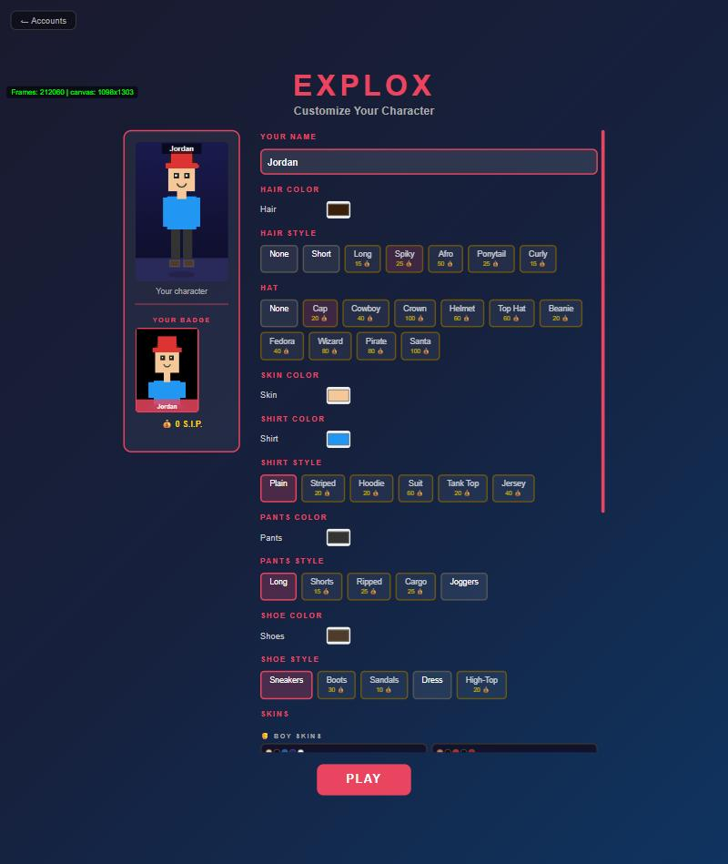
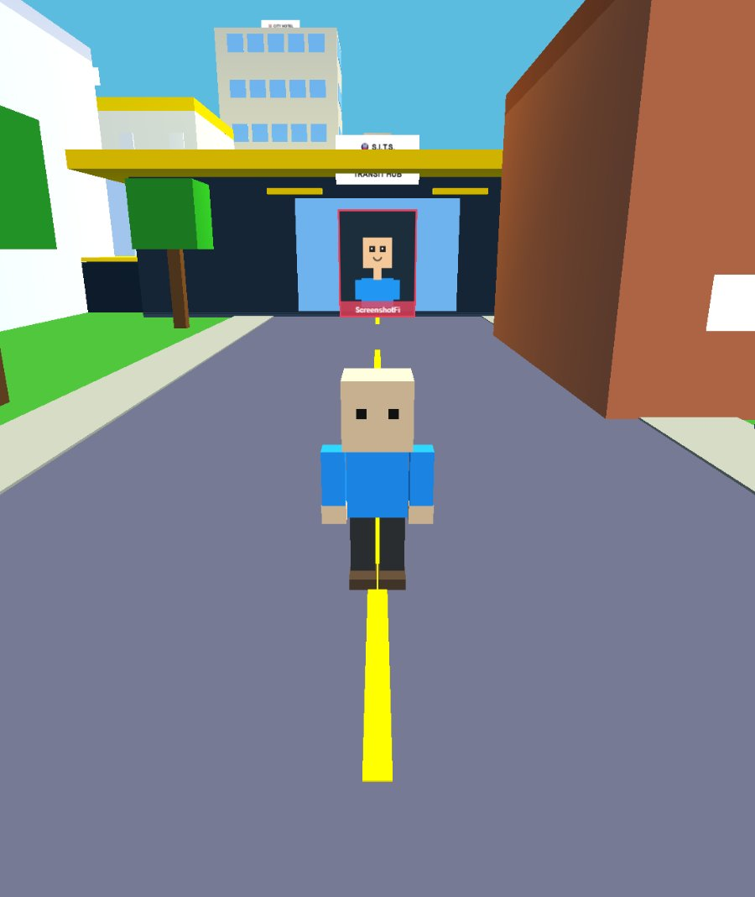
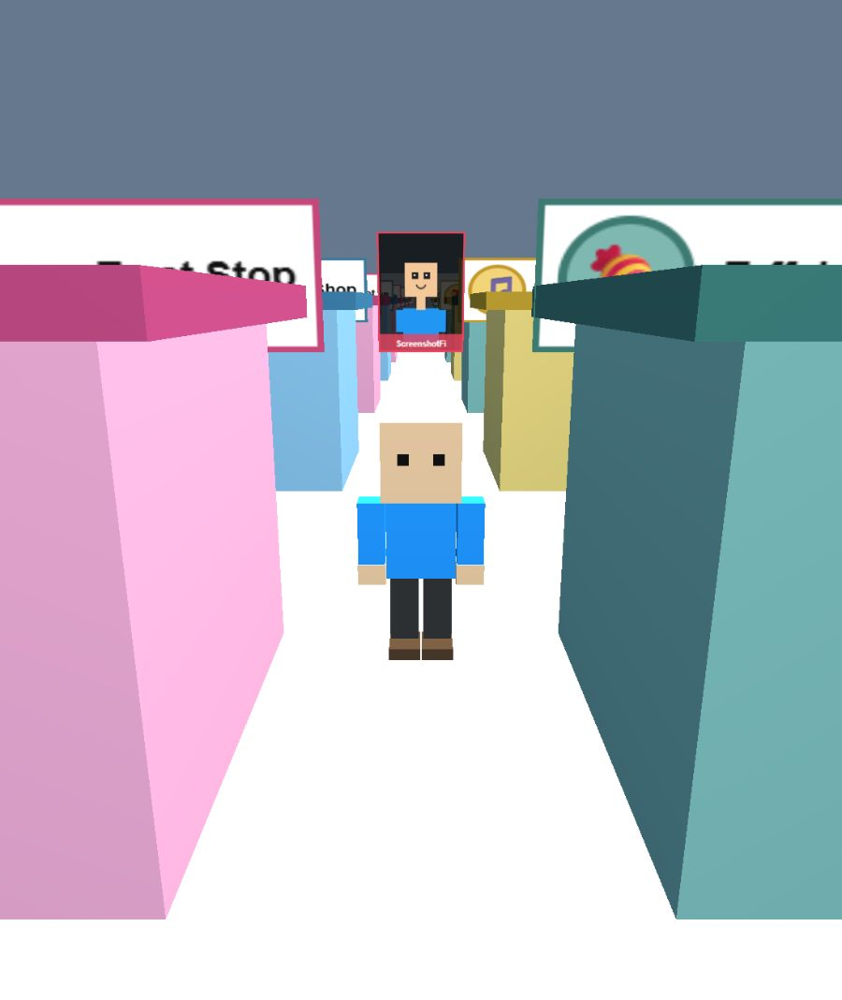

⚡ Start playing in 60 seconds
- Press ▶ Play Free and pick ONLINE (play with others) or OFFLINE (just you).
- Type a name and password, then press + CREATE ACCOUNT.
- Customize your character and press PLAY.
- Click the screen, then walk with WASD — or the joystick on a phone.
- Walk up to anything interesting and press E. Open the ☰ Menu (bottom-left) for everything else.
Start the game
Open the play page. You'll land on Select Your Account. There's nothing to download or install.
🟢 ONLINE
A shared world. You can chat, see other players, buy from their stores, send S.I.P., hire people, and your progress is saved to your account so it follows you to any device.
🔴 OFFLINE
Just you. Great for a quiet game. Your progress is saved in this browser only, so clearing your browser data erases it.
- Type a new account name and a password, then press + CREATE ACCOUNT. (Already have one? Just click it in the list and enter your password.)
- On the Customize Your Character screen, pick your hair, hat, skin, shirt, pants and shoes. Some items cost S.I.P., so the free ones are fine for now — you can change your look later.
- Press PLAY. The first time, a short Welcome guide pops up — press Next or Skip guide.

Move around
On a computer, click the game screen once to capture your mouse — then moving the mouse looks around. Press Esc any time to get your cursor back.
| Key | What it does |
|---|---|
| W A S D | Walk forward, left, back, right |
| Shift | Run (hold while walking) |
| Space | Jump |
| Mouse | Look around |
| E | Interact — doors, shop counters, people, objects |
| F | Attack (and fire your vehicle's weapon) |
| Q | Throw a grenade |
| B | Open your Bag (inventory) |
| C | Eat food from your Bag, one bite at a time |
| T | Ask SAI, your in-game helper, a question |
| G | Open Add-Ons (fun extras, bills, buddies) |
| M | Music player |
| Enter | Open chat (online) — Esc closes it |
| Y / P | Give S.I.P. to / view the profile of the nearest player (online) |
📱 On a phone or tablet
- Move with the joystick in the bottom-left. Drag anywhere else on the screen to look around.
- Buttons on the right: ⬆ jump, E interact, RUN sprint. In a Tank, Jet or Motorcycle a 🔥 FIRE button appears.
- Tap ⛶ Full for fullscreen — it makes the game much easier to see.

Interact with the world
When you stand near something you can use, a prompt like [E] … appears on screen. Press E (or tap the E button) to use it — open a door, buy from a shop counter, talk to a neighbor, sit on a sofa, and more.
Watch the meters in the corner of your screen:
- 💰 S.I.P. — your main money. 💎 Elite Coins are a rarer currency.
- 🍔 Hunger — eat from your Bag (C), buy food, or cook at home. Eating too much too fast can make you throw up!
- 🚽 Bladder and 😴 sleep — use the toilet and bed in your house.
- 🪵 Wood and 🔩 Scrap — materials you gather and use to craft things.
- Location, weather and time — the world has day and night and changing seasons, and everyone online sees the same sky.
Also, your character grows up the more you play: Baby, Kid, Teen, then Adult.
Earn S.I.P.
There's no single "right" way to make money. Pick whatever sounds fun:
💼 Get a job
Open 💼 JOB in the Menu, or walk into almost any shop and clock in. Pay depends on what the shop sells. The City Bank even has jobs, including guard duty.
🪓 Gather & craft
Chop trees in Whispering Woods for wood, defeat robots and grind their wreckage at the Dump for scrap, then craft items instead of buying everything.
🏪 Run a store
Buy a store, stock the shelves, set your own prices, and hire staff. Other players can visit and buy from you, and you can sell your own stuff — even a car.
🤖 Fight robots
Tougher robots at the Scrapyard drop rare 💎 Elite Coins. Bring a weapon from the Armory.
🎮 Mini-games & events
Open 🎮 MINI GAMES and 🎁 DAILY EVENTS in the Menu for fun challenges and daily rewards.
👥 Hire or get hired
Pay other players to gather for you — or take a job from them. See step 8.
Keep your stuff safe
Explox has real consequences. If you get knocked out, you lose what you were carrying — wallet S.I.P., cash, inventory, weapons and armor, wood and scrap. It drops as a pile where you fell: walk back and press E to pick it up again.
These are always safe and never lost: bank and safe contents, houses and land, cars, and your outfit and cosmetic unlocks.
Want fewer fights? Open ⚔️ DIFFICULTY in the Menu. It goes from a gentle Baby Steps all the way up to Apocalypse, and Peaceful mode turns off ambient danger entirely.
Your home & computer
You start with a free house in the city. Walk inside and press E on things to use them: sleep in the bed, sit on the sofa, watch TV, cook a meal, read a book, or use the toilet. There's a Safe for your valuables too.
Later you can buy land at Sunset Plains and build on it. Owning land or a car comes with recurring bills — pay them under 🧩 Add-Ons (G) before they go late.
💻 The computer
Buy a computer at the Computer Shop, then use the one in your house to open a real Desktop with separate windows:
- 🌐 SIB — a web browser. Type a real address to open a real site, or type a question to run a real web search.
- 📱 App Store — needs a phone or tablet and is passcode-locked. It holds 100 working apps: calculators, games, tools, a joke generator, and even a Shop app that buys anything for its real price.
- Install an app and its icon appears on your Desktop.
Hire other players
Want help gathering? Open 💼 HIRE in the Menu (needs ONLINE mode). You pay real S.I.P., and nobody is ever forced to work for you.
- Under Post a Job, type the other player's exact account name.
- Pick a task: 🪵 Chop Wood, 🔩 Kill Robots (Scrap), or ✍️ Custom Job — describe anything you like.
- Set the pay per unit and a total budget. The budget is taken from your wallet right away, so there's always real money behind the pay.
- They get an offer and can Accept or Decline. If they accept, whatever wood or scrap they gather goes to you and they're paid on the spot from your budget.
- For a Custom Job, they press ✅ Report Work Done when they've finished and get paid for it — you decide if the work was good.
Fighting
Killers, rogue robots and robbers roam the world — you choose how much to engage. Press F to swing or shoot, or E near an enemy (hold it to charge a stronger hit). Q throws a grenade.
- Buy weapons and armor at the Armory. Higher tiers unlock as you level up.
- Vehicles like Tanks, Jets and Motorcycles have their own weapons — F fires them.
- Do crimes and the police will come after you — you can even end up in prison.
- You can challenge a friend to a duel, and the Fight Arena is a free-for-all.
Explore the world
- 🚗 Cars — buy one at the Car Dealership and drive it around.
- 🚇 S.I.T.S. Transit — ride the lines to fast-travel across the city.
- ✈️ The Airport — fly to 8 real countries, each with its own landmarks and time zone, and beyond Earth to the Moon, Mars and more.
- 🏬 The Mall — a whole shopping wing with hundreds of themed shops you can walk into.
- 🎬 Cinema & Arcade — real movies and classic arcade games.
- 🔫 EXGUN — a separate RPG shooter from the same creator. Try it.

Fixes & FAQ
The mouse won't look around
Click once on the game screen to capture the mouse. If you pressed Esc, click again to get it back.
The game looks old, or a new feature is missing
Your browser may be showing a saved copy. Do a hard refresh: Ctrl+Shift+R (or Cmd+Shift+R on a Mac). On a phone, close the tab and reopen the site.
Online says the server is sleeping or won't connect
The free server naps when it's quiet and can take up to about a minute to wake. Wait for the loading bar, then try again. You can always play Offline in the meantime.
I lost my progress
Online progress lives on your account — just log in again with the same name and password. Offline progress lives only in that one browser, so clearing site data or switching browsers or devices will not bring it back.
I died and lost my stuff
Go back to where you were knocked out — your items are in a pile there. Walk up and press E to pick them up. Your bank, safe, houses, cars and outfits are never lost.
Is Explox free? Do I need to download it?
It's free to play and runs right in your browser — no download or install. It works on computers, phones and tablets.
I'm stuck and don't know what to do
Press T to ask SAI, open ❓ HELP in the Menu to replay the Welcome guide, or just get a job and start earning.
Friends & chat
In ONLINE mode the world is shared:
/pay Sam 50), or stand near them and press Y.